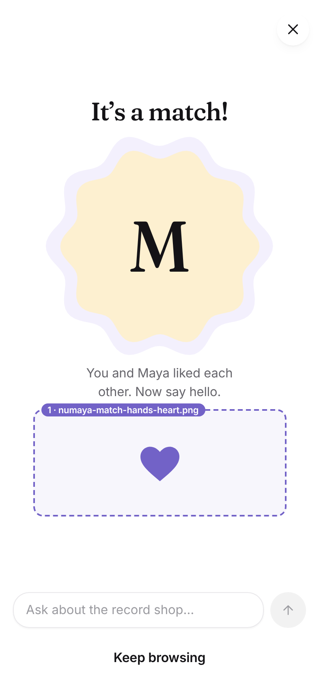
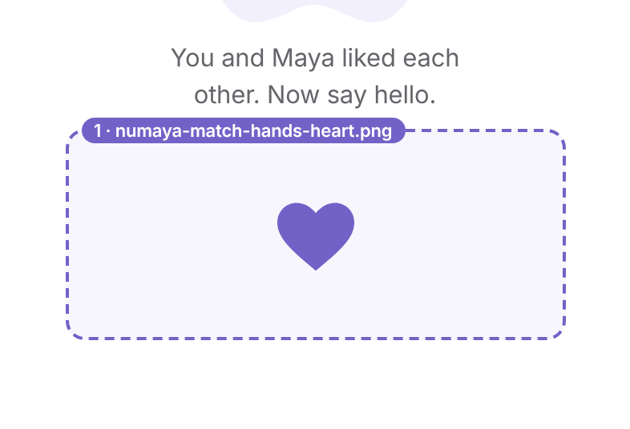

numaya-match-hands-heart.png


flows.html?screen=match
Rendered at 320 × 128 px
| Purpose | The match moment itself: two people meeting halfway and making something together. |
|---|---|
| Art direction | Two hands entering from the left and right edges, meeting in the centre to form a heart with fingers and thumbs. Friendly, slightly stylised (not photoreal), one hand wearing a couple of rings, the other a bracelet or watch. The heart shape should read at 120px tall. Arms may bleed off the left and right edges of the canvas. |
| Palette | White or transparent ground; near-black (#141316) outlines; brand purple #7262C7 as the one strong accent; lavender #F3F0FD / #E9E4FB for soft fills; Meetup periwinkle, yellow and rose only as small marks. Skin tones: a warm and a cool tone so the hands read as two different people. |
| Aspect ratio | 5:2 (wide) |
| Export size | @1x 320 × 128 · @2x 640 × 256 · @3x 960 × 384 (deliver this) |
| Safe margins | Heart centred with 12% clear space above and below; arms may touch the left and right edges. |
| Background | Transparent PNG (sits on white). |
| Shadows | None in the artwork; the UI adds none either. |
| Text | No embedded text. |
| Animation | Planned: hands slide in from the edges and meet to form the heart (separate layers for each hand and accessory in the source file). |
| Status today | fallback: joining purple heart (MatchHeart) |